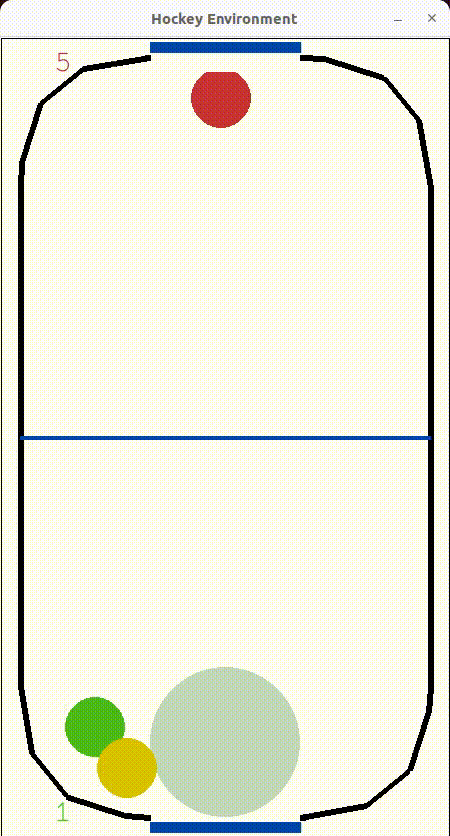

Hockey Environment
Opis
Koda definira okolje za simulacijo igre zračnega hokeja. Okolje se izvaja z uporabo fizikalnega motorja Pybox2D in API OpenAI Gym. Okolje je sestavljeno iz pravokotnega igralnega polja z osrednjo črto, ki polje deli na dve polovici. Na igrišču sta dva igralca, enega upravlja agent umetne inteligence, drugega pa hevristični algoritem. Cilj igre je izstreliti plošček v nasprotnikova vrata in hkrati braniti svoja vrata.
Koda definira razred z imenom HockeyEnv, ki deduje iz razreda gym.Env. Konstruktor razreda inicializira različne parametre okolja, kot so dimenzije igralnega polja, velikosti ploščka in igralcev, največje hitrosti igralcev in ploščka ter število časovnih korakov za vsako epizodo. Opredeljena sta tudi prostor stanj in akcij okolja. Prostor stanj je 12-razsežni zvezni prostor, ki predstavlja položaje in hitrosti agenta, nasprotnika in ploščka. Prostor stanj je dvodimenzionalni zvezni prostor, ki predstavlja hitrosti x in y agenta.
Razred HockeyEnv ustvari svet Pybox2D in inicializira entitete igre, kot so igralci, plošček in vratnice. Okolje ustvari tudi dva objekta umetne inteligence, top_ai in bottom_ai, ki nadzorujeta gibanje nasprotnika. Ta objekta uporabljata preprosto hevristično strategijo sledenja ploščku in premikanja proti njemu za obrambo gola.
Koda opredeljuje tudi razred ContactListener, ki podeduje razred b2ContactListener, ki ga zagotavlja Pybox2D. Ta razred se uporablja za zaznavanje trkov med entitetami igre.
Na koncu razred HockeyEnv definira več metod za pridobivanje položajev in hitrosti igralnih entitet, posodabljanje stanja igre in prikazovanja igre. Igra se lahko v realnem času prikaže v oknu Pygame, zaslon pa se lahko shrani v obliki videoposnetka.
